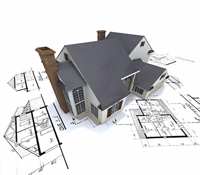

- 

The use of technology in architecture has no limits. Technology today has much developed enormously when comparing to the older periods of architecture design.
When we talk about use of technology in architecture, we mainly think about the IT Architecture (Information Technology Architecture).
Best practice IT architecture encourages the use of open technology standards and global technology interoperability. IT Architecture can also be called a high-level map or plan of the information assets in an organization, including the physical design of the building that holds the hardware.
The term software architecture intuitively denotes the high level structures of a software system. It can be defined as the set of structures needed to reason about the software system, which comprise the software elements, the relations between them, and the properties of both elements and relations.
AUTOCAD - A popular CADD program commonly used for architectural and engineering applications.
CHIEF ARCHITECT- An architectural drafting software package commonly used by professional designers, builders, architects and remodelers.
SKETCHUP - A 3D modelling program for a broad range of applications such as architectural, civil, mechanical, film as well as video game design.
ARCHICAD - Easy to use, popular CAD program for architects and designers. It uses a single building file and object technology concept known as Virtual Building.


 4
4